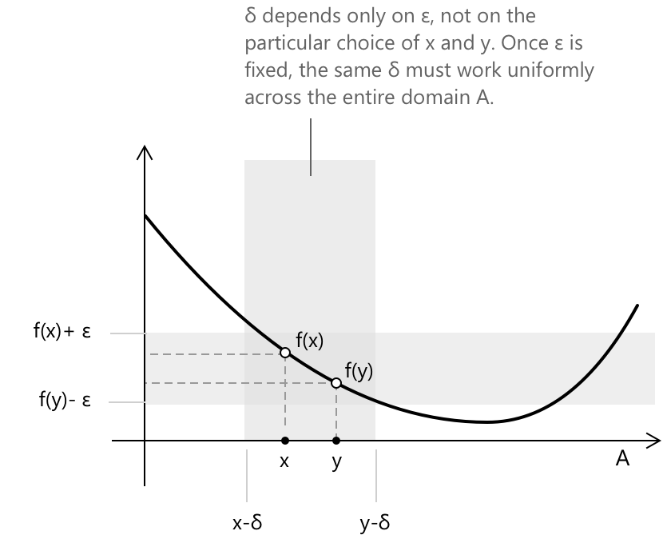

Рівномірна неперервність
Вступ
Звичайна неперервність описує локальну поведінку функції, де малі зміни аргументу поблизу кожної точки призводять до малих змін значення функції. Ця властивість може залежати від конкретної точки, і в багатьох контекстах потрібна більш стійка форма неперервності, щоб забезпечити послідовне регулювання коливань у всій області визначення. Рівномірна неперервність задовольняє цю потребу, вимагаючи, щоб єдиний допуск для варіацій аргументу застосовувався всюди в множині.
Ця властивість стабільності призводить до кількох важливих наслідків:
- Неперервні функції можуть бути продовжені з щільних підмножин на їхні замикання.
- Інтегрування та операції з границями поводяться керованим, передбачуваним чином.
- Неконтрольовані коливання поблизу нескінченності запобігаються щоразу, коли область визначення є компактною.
Під коливаннями розуміють варіацію значень функції в заданій області, а саме те, наскільки функція піднімається та опускається на маленькій ділянці області визначення. Наприклад, функція \(\sin(1/x)\) поблизу початку координат демонструє нескінченні коливання в будь-якому малому проміжку, що робить її поведінку дедалі важчою для контролю.
Означення
Розглянемо функцію \( f : A \subset \mathbb{R} \to \mathbb{R} \). Функція є рівномірно неперервною на \( A \), якщо для кожного \( \varepsilon > 0 \) існує таке \( \delta > 0 \), що для всіх \( x, y \in A \) виконується наступна імплікація:
\[ |x - y| < \delta \to |f(x) - f(y)| < \varepsilon \]
Суттєвою особливістю цього означення є те, що значення \( \delta \) залежить виключно від \( \varepsilon \), а не від конкретних точок \( x \) та \( y \). Одне й те саме \( \delta \) має бути придатним для кожної пари точок в області визначення.

Графік показує глобальний характер умови, підкреслюючи, що одне й те саме \( \delta \) контролює варіацію функції в усій області визначення. Зокрема, щоразу, коли \( |x – y| < \delta \), звідси випливає, що \( |f(x) - f(y)| < \varepsilon \) для всіх \( x, y \in A \).
Відмінність між неперервністю та рівномірною неперервністю стає зрозумілішою при порівнянні зі стандартним означенням неперервності в точці \( x_0 \). Функція є неперервною в \( x_0 \), якщо для кожного \( \varepsilon > 0 \) існує таке \( \delta > 0 \), яке може залежати від \( x_0 \), що:
\[ |x - x_0| < \delta \to |f(x) - f(x_0)| < \varepsilon \]
Відмінність полягає в залежності \( \delta \):
- Для звичайної неперервності \( \delta \) може змінюватися для кожної точки в області визначення.
- Для рівномірної неперервності одне значення \( \delta \) є придатним для всіх точок у множині.
Теорема Гейне–Кантора
Теорема Гейне–Кантора встановлює умови, за яких неперервність передбачає рівномірну неперервність. Зокрема, на компактних множинах локальної властивості неперервності достатньо, щоб гарантувати існування єдиного глобального параметра керування \( \delta \), застосовного до всієї області визначення.
Нехай \( K \subset \mathbb{R} \) — компактна множина. Якщо функція \( f : K \to \mathbb{R} \) є неперервною на \( K \), то вона є рівномірно неперервною на \( K \). Зокрема, оскільки компактність у \( \mathbb{R} \) еквівалентна тому, що множина є замкненою та обмеженою, теорема допускає наступне еквівалентне формулювання:
Якщо \( f : [a,b] \to \mathbb{R} \) є неперервною на замкненому та обмеженому проміжку \( [a,b] \), то \( f \) є рівномірно неперервною на \( [a,b] \).
Теорема визначає компактність як точну структурну властивість області визначення, яка запобігає виродженню локальної неперервності в суто точкову поведінку, забезпечуючи натомість глобальну форму регулярності.
Послідовна характеристика
Рівномірну неперервність можна еквівалентно сформулювати через послідовності. Зокрема, функція \( f : A \to \mathbb{R} \) є рівномірно неперервною на \( A \) тоді і тільки тоді, коли для кожної пари послідовностей \( (x_n) \) та \( (y_n) \) у \( A \), що задовольняють умову \(|x_n - y_n| \to 0\), ми також маємо:
\[ |f(x_n) – f(y_n)| \to 0 \]
Це формулювання підкреслює, що рівномірно неперервні функції зберігають інфінітезимальну близькість між послідовностями, і саме тому вони відображають послідовності Коші в послідовності Коші.
Цей критерій особливо корисний для встановлення того, що функція не є рівномірно неперервною, як показано в Прикладі 1.
Приклад 1
Розглянемо функцію \( f(x) = x^2 \) на проміжку \( \mathbb{R} \). Ця функція є неперервною всюди, оскільки вона є поліномом, але вона не є рівномірно неперервною на \( \mathbb{R} \). Причина полягає в тому, що функція зростає дедалі швидше зі збільшенням \( |x| \). Для точок, віддалених від початку координат, навіть невелика зміна ( x ) може призвести до великої зміни \( f(x) \), і жодне єдине \( \delta \) не може контролювати цю поведінку одночасно на всій прямій.
Натомість, коли функція обмежена замкненим і обмеженим проміжком \( [a, b] \), вона стає рівномірно неперервною. На таких областях визначення зростання функції є ефективно обмеженим. Це можна уточнити, використовуючи послідовну характеристику та розглянувши послідовності, визначені як \( x_n = n + \frac{1}{n} \) та \( y_n = n. \) Різниця між цими послідовностями задається як:
\[|x_n - y_n| = \frac{1}{n} \to 0\]
Різниця між образами цих послідовностей під дією функції задовольняє:
\[|f(x_n) - f(y_n)| = \left(n + \frac{1}{n}\right)^2 – n^2 = 2 + \frac{1}{n^2} \to 2\]
Оскільки \( |f(x_n) – f(y_n)| \) не прямує до нуля, функція не задовольняє послідовний критерій рівномірної неперервності, отже, функція не є рівномірно неперервною на \( \mathbb{R} \).
Цей приклад роз'яснює зв'язок між неперервністю та рівномірною неперервністю. У загальних термінах маємо:
-
Неперервність не означає рівномірної неперервності. Функція може бути неперервною в кожній точці своєї області визначення, не задовольняючи єдиного глобального \( \delta \), яке працювало б рівномірно для всіх пар точок.
-
Рівномірна неперервність, однак, є сильнішою умовою. Якщо функція рівномірно неперервна на \( A \), то вона обов'язково є неперервною в кожній точці \( A \).
Неперервність Ліпшиця
Особливою формою рівномірної неперервності є неперервність Ліпшиця. Кажуть, що функція \( f : A \subset \mathbb{R} \to \mathbb{R} \) є неперервною за Ліпшицем на \( A \), якщо існує стала \( L > 0 \), яка називається сталою Ліпшиця, така що для всіх ( x,y \in A ) маємо:
\[ |f(x) - f(y)| \le L |x – y| \]
Ця умова гарантує, що близькі точки відображаються в близькі значення, і встановлює глобальну лінійну межу коливань функції: зміна вихідного значення пропорційна зміні вхідного значення. Одна й та сама стала \( L \) повинна працювати всюди в області визначення. Наслідок для рівномірної неперервності випливає безпосередньо. Для будь-якого \( \varepsilon > 0 \), вибір \( \delta = \varepsilon / L \) гарантує, що:
\[ |x - y| < \delta \to |f(x) - f(y)| \le L |x – y| < L \delta = \varepsilon \]
Отже, кожна функція, неперервна за Ліпшицем, є рівномірно неперервною.
Однак обернене твердження в цілому не є правильним. Функція може бути рівномірно неперервною, не задовольняючи жодної глобальної лінійної межі такої форми. Таким чином, неперервність Ліпшиця є суворо сильнішою умовою.
Корисний критерій пов'язує неперервність Ліпшиця з диференційовністю. Якщо функція \( f \) є диференційовною на проміжку і її похідна обмежена, тобто існує \( M > 0 \), така що для всіх \( x \) на проміжку:
\[ |f’(x)| \le M \]
Тоді, за теоремою про середнє значення, \( f \) є неперервною за Ліпшицем зі сталою Ліпшиця \( L = M \). Для будь-яких двох точок \( x, y \) на проміжку існує \( c \) між ними, така що:
\[ f(x) - f(y) = f’(c)(x - y) \]
Взяття модулів тоді дає \( |f(x) - f(y)| \leq M|x – y| \), що є умовою Ліпшиця зі сталою \( L = M \).
Геометрично неперервність Ліпшиця обмежує крутизну графіка. Кутові коефіцієнти всіх січних ліній рівномірно обмежені за модулем величиною \( L \). Таким чином, функція не може коливатися швидше, ніж за фіксованою лінійною швидкістю.
Приклад 2
Теорема Гейне–Кантора гарантує рівномірну неперервність, якщо область визначення є компактною. Однак компактність є достатньою, але не необхідною умовою, і рівномірна неперервність може виконуватися також на областях, які не є компактними. Цей приклад демонструє таку ситуацію.
Розглянемо функцію \( f(x) = \sin(x) \), визначену на всій прямій дійсних чисел \( \mathbb{R} \). Область визначення є необмеженою і не є компактною, тому рівномірна неперервність не гарантується апріорі і має бути перевірена безпосередньо.
Дано \( \varepsilon > 0 \) та довільні \( x, y \in \mathbb{R} \), мета полягає в тому, щоб знайти єдине \( \delta > 0 \), що залежить тільки від \( \varepsilon \), таке, що щоразу, коли \( |x - y| < \delta \), звідси випливає, що \( |\sin(x) - \sin(y)| < \varepsilon \). Застосування формули перетворення суми в добуток дає:
\[|\sin(x) – \sin(y)| = 2\left|\cos\!\left(\frac{x+y}{2}\right)\sin\!\left(\frac{x-y}{2}\right)\right|\]
Оскільки \( |\cos(\cdot)| \leq 1 \) всюди, це спрощується до:
\[|\sin(x) - \sin(y)| \leq 2\left|\sin\!\left(\frac{x-y}{2}\right)\right|\]
Застосування стандартної нерівності \( |\sin(t)| \leq |t| \), що виконується для всіх \( t \in \mathbb{R} \), дає:
\[|\sin(x) - \sin(y)| \leq 2 \cdot \frac{|x - y|}{2} = |x - y|\]
Це задовольняє умову Ліпшиця зі сталою \( L = 1 \), яка виконується для кожної пари точок у \( \mathbb{R} \) без обмежень. Вибравши \( \delta = \varepsilon \), щоразу, коли \( |x – y| < \delta \), звідси випливає, що:
\[|\sin(x) – \sin(y)| \leq |x – y| < \delta = \varepsilon\]
Тут \( \delta \) залежить виключно від \( \varepsilon \), отже, \( f \) є рівномірно неперервною на \( \mathbb{R} \).
Основна причина є геометричною: функція синус коливається нескінченно, але її коливання залишаються постійно обмеженими за амплітудою, а її кутовий коефіцієнт ніколи не перевищує одиниці за абсолютним значенням, оскільки \( |f’(x)| = |\cos(x)| \leq 1 \) всюди. Ця глобальна обмеженість швидкості зміни запобігає неконтрольованому зростанню, що спостерігалося в Прикладі 1, і гарантує, що рівномірне \( \delta \) є досяжним на всій прямій дійсних чисел.
Підсумок
| Поточкова неперервність не означає рівномірної неперервності. |
| Рівномірна неперервність означає поточкову неперервність. |
| Неперервність за Ліпшицем означає рівномірну неперервність. |
Вибрана література
-
MIT, S. Rodriguez. Uniform Continuity and Derivative
-
University of Wisconsin–Madison, J.W. Robbin. Continuity and Uniform Continuity
-
University of Maryland, D. Cellarosi. Uniform Continuity
-
University of California, N. Donaldson. Continuity and Uniform Continuity
-
Michigan State University, J. Shapiro. Notes on Uniform Continuity